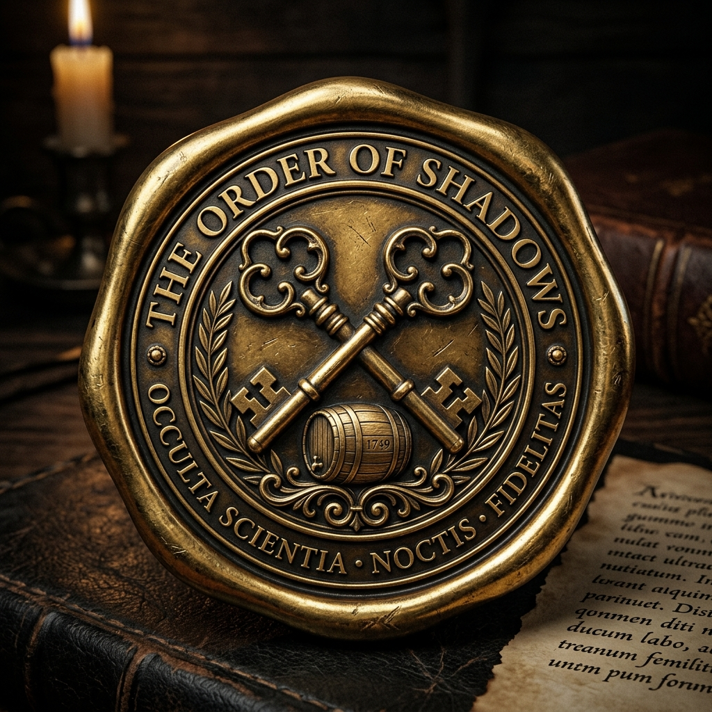
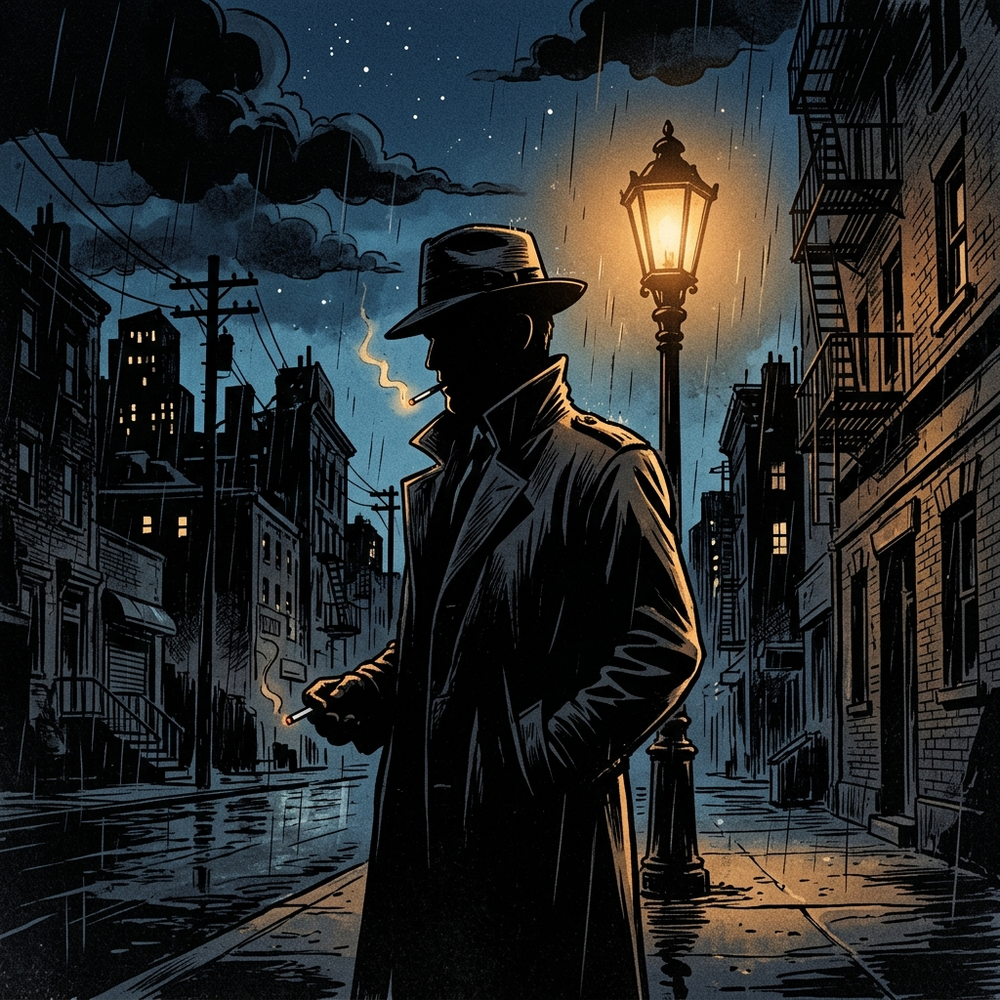

Der Pakt der
Schlappen-Erben
Ein Nacht-Krimi in Hof (Saale) · GCBYXW0
Die Nacht senkt sich über Hof. Ein historisches Geheimnis aus dem Jahr 1823 wartet darauf, gelöst zu werden. Bist du bereit, die Ermittlungen aufzunehmen?
OFFIZIELLE ERMITTLUNGSAKTE · KRIMINALPOLIZEI HOF
Test-Modus: Name
OFFLINETEST (Couch) oder ONSIDETEST (Vor Ort / Tag)
[FEHLER] Bitte Identität bestätigen.
Ermittlungs-Protokoll
1. Vorbereitung
Begib dich nach Einbruch der Dunkelheit zum Rathaus in der Ludwigstraße. Bringe ein aufgeladenes
Smartphone mit Internetverbindung mit.
2. Das Dossier
Deine Ermittler-Pinnwand sammelt automatisch alle Beweise, Zeugenaussagen und verdächtigen Personen.
3. Navigation & Sonar
Das GPS führt dich. Je näher du einem Tatort kommst, desto schneller pulsiert dein digitaler Peilsender.
4. Gadgets nutzen
Setze virtuelles UV-Licht ein, rubble Rußspuren frei oder lausche mit dem Richtmikrofon. Dein Smartphone
wird zum Werkzeug.
5. Das Finale
Hast du alle 11 Stationen untersucht, musst du den wahren Täter überführen und erhältst die Koordinaten
der Final-Dose sowie dein Diplom.

made by Versteckules